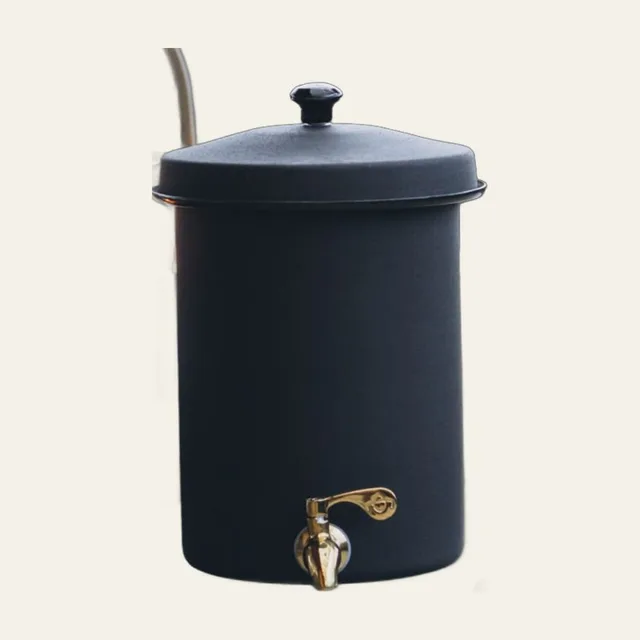
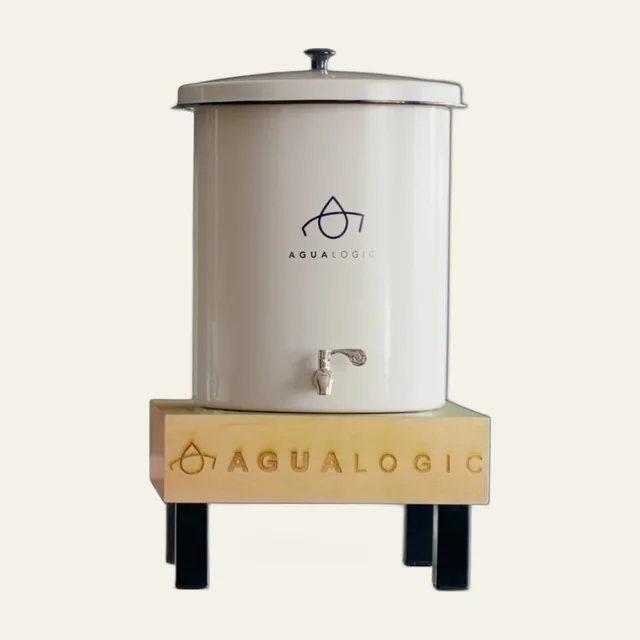
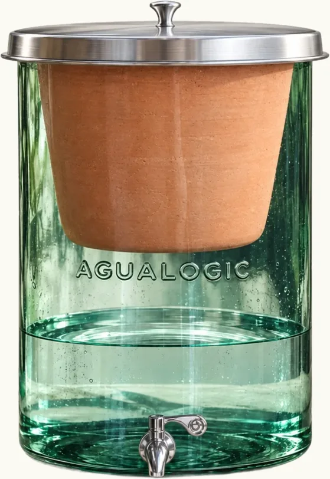
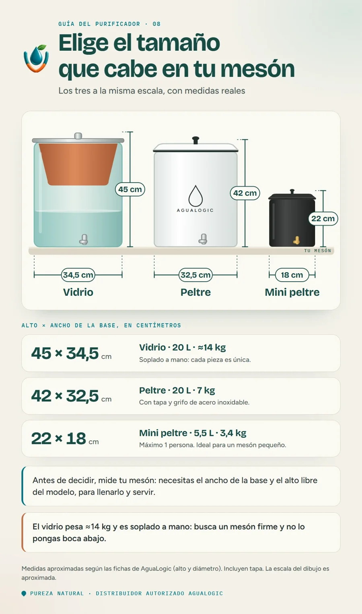

- 1 persona: mini peltre de 5,5 litros, $380.000.
- 2 personas o más: peltre de 20 litros, $540.000, o vidrio de 20 litros, $810.000.
- El peltre y el vidrio guardan lo mismo (20 L). Cambian el material, el peso, el estilo y el precio.
Antes de elegir, haz dos cosas: cuenta cuántas personas toman agua en tu casa y mide el mesón donde lo vas a poner. Aquí tienes los tres modelos con sus medidas reales, para que compares sin adivinar.
Los precios son los del catálogo de Pureza Natural, distribuidor autorizado de AguaLogic.
Los tres tamaños, con medidas

- 5,5 litros
- 3,4 kg
- Para 1 persona

- 20 litros
- 7 kg
- Tapa y grifo de acero

- 20 litros
- ≈14 kg
- Soplado a mano
Medidas: alto × diámetro de la base, con tapa, aproximadas según las fichas de AguaLogic.
Los tres, a la misma escala

¿Cuál te conviene según tu familia?
Como referencia, cuenta unos 2 litros por persona al día entre agua para beber, café, jugos y cocina. Es una cuenta aproximada: con calor, niños o deportistas, el consumo sube.
| En casa son | Agua al día (aprox.) | Te conviene | Precio |
|---|---|---|---|
| 1 persona | 2 litros | Mini peltre (5,5 L) | $380.000 |
| 2 o 3 personas | 4 a 6 litros | Peltre (20 L) | $540.000 |
| 4 personas o más | 8 litros o más | Peltre o vidrio (20 L) | $540.000 / $810.000 |
Si estás entre dos modelos, escoge el de 20 litros: es más cómodo no recargar a cada rato.
Si vives solo
El mini peltre (5,5 litros) es el más económico y cabe en un mesón pequeño. Está pensado para una persona. Si son dos, mejor pasa al de 20 litros.
Si son dos o tres en casa
El peltre de 20 litros es el de uso diario para el hogar. Pesa 7 kg, la mitad que el de vidrio, así que es más fácil de ubicar y de mover al limpiarlo.
Si son cuatro o más
Aquí sirven el peltre y el vidrio: los dos guardan 20 litros. Elige según el estilo y el mesón. El vidrio es una pieza soplada a mano, a la vista en la cocina; pesa unos 14 kg y es más delicado, así que busca una superficie firme. Si no tienes mesón, tenemos bases y mesas hechas para él.
Lo que también cuenta al elegir
- El espacio libre arriba. Necesitas más altura que el modelo, para destaparlo y llenarlo.
- El peso. Con 14 kg, el vidrio pide un mesón firme. El peltre pesa 7 kg.
- Los niños pequeños. El vidrio es más delicado que el peltre: ponlo fuera de su alcance.
- El repuesto. La vasija dura 2 años según AguaLogic. Pregunta cuánto cuesta cambiarla.
- Quién te lo vende. Elige un distribuidor autorizado que gestione la garantía por ti.
¿No sabes cuál te conviene?
Cuéntanos cuántas personas son en casa y cuánto mide tu mesón, y te recomendamos el modelo.
Preguntas frecuentes
¿Qué purificador me conviene si vivo solo?
El mini peltre, de $380.000, tiene 5,5 litros, mide 22 × 18 cm y está pensado para una persona.
¿Cuánto mide cada purificador?
Alto × diámetro, con tapa: el mini peltre mide 22 × 18 cm, el peltre 42 × 32,5 cm y el vidrio 45 × 34,5 cm. Son medidas aproximadas según las fichas de AguaLogic.
¿Cuál es la diferencia entre el peltre y el vidrio?
Los dos guardan 20 litros. El peltre pesa 7 kg y cuesta $540.000. El vidrio, soplado a mano, pesa unos 14 kg y cuesta $810.000.
¿Y si somos más de seis o es para un negocio?
Escríbenos por WhatsApp con el número de personas y el uso, y te decimos si te conviene uno o más purificadores.
Para entender cómo funciona, lee la guía de purificadores en Villavicencio. ¿Dudas con el ahorro? Mira la comparativa con el botellón.